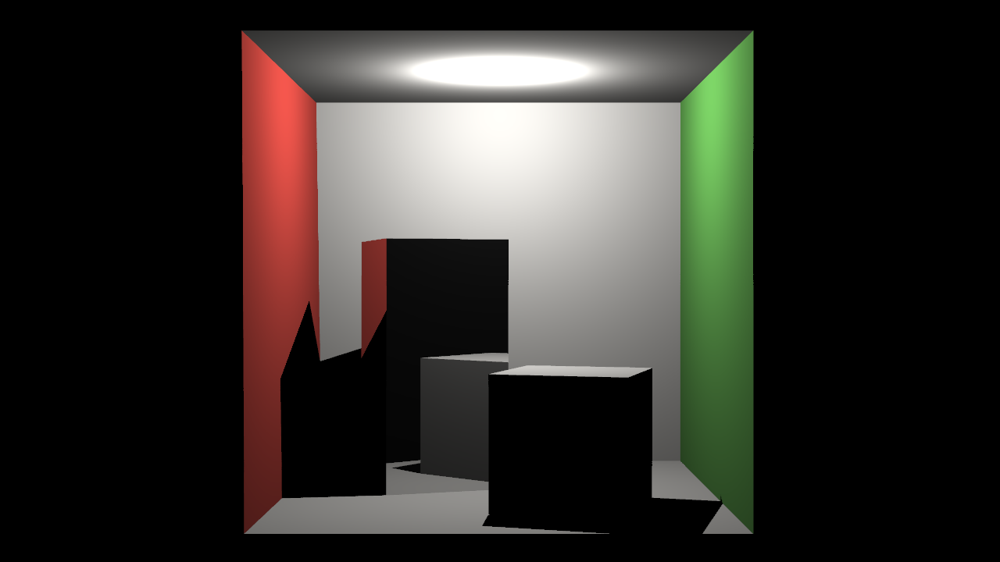
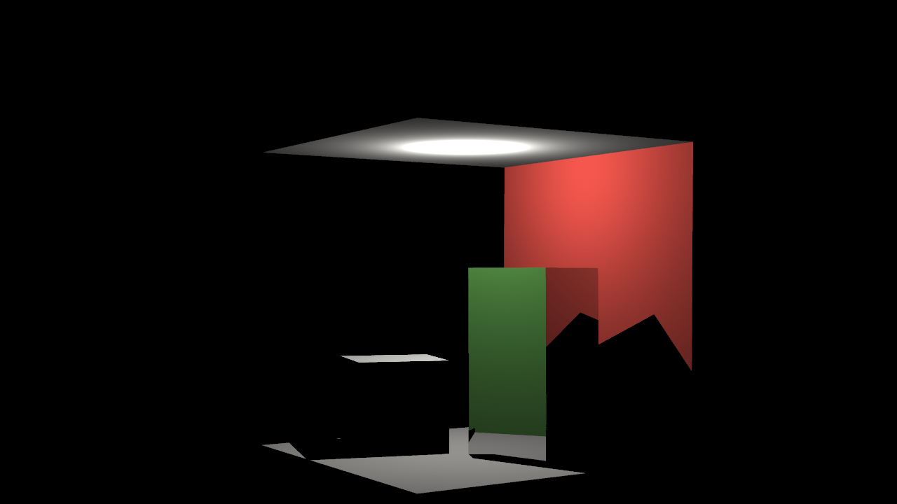
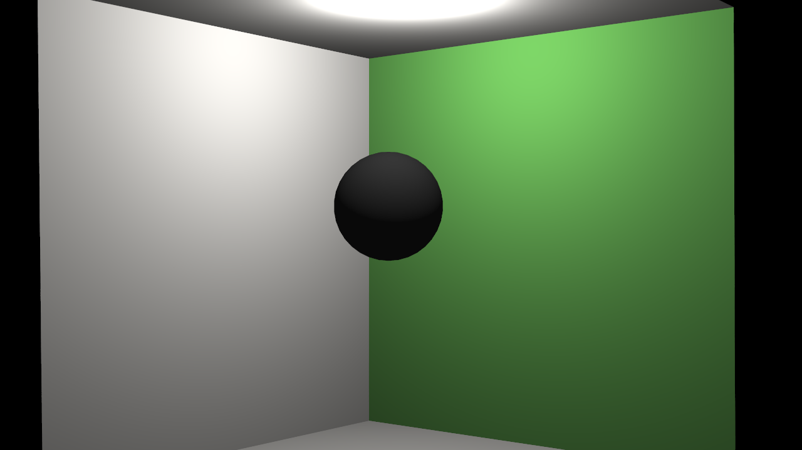
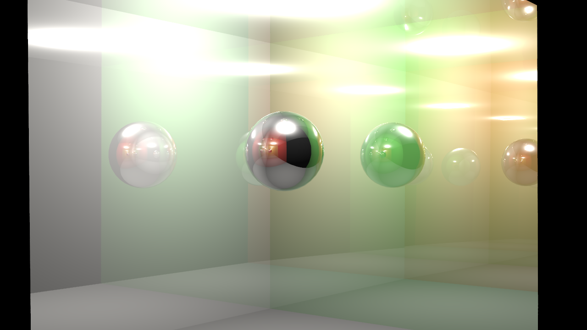
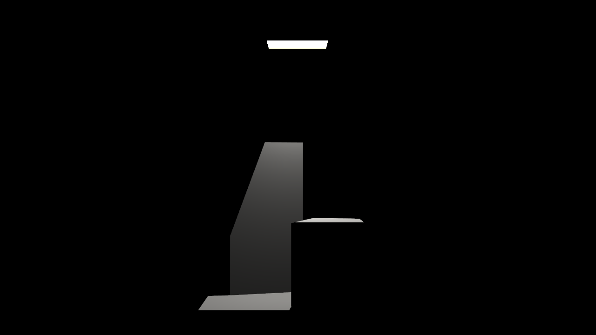
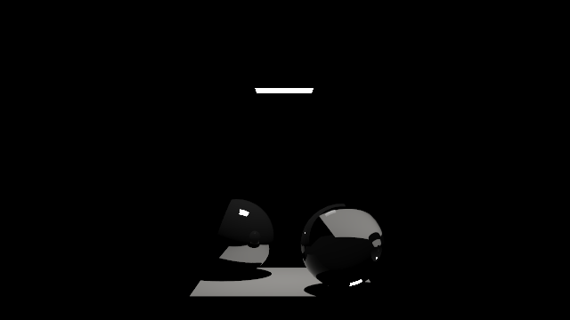
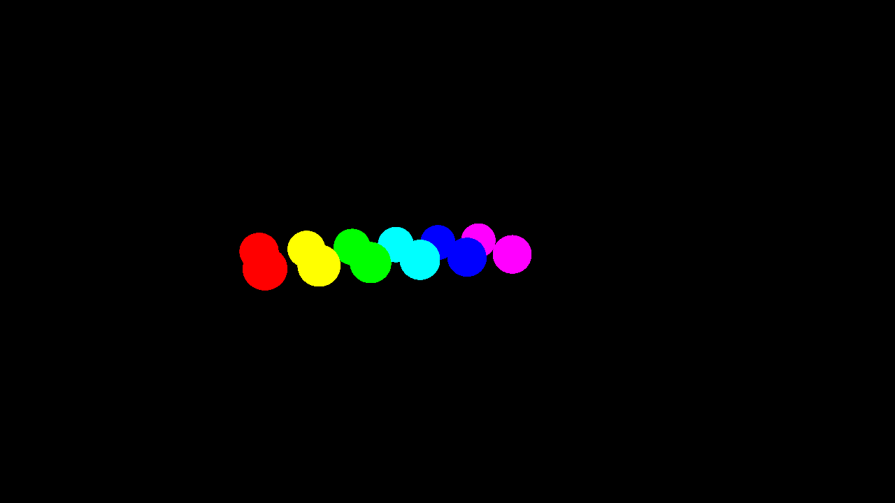
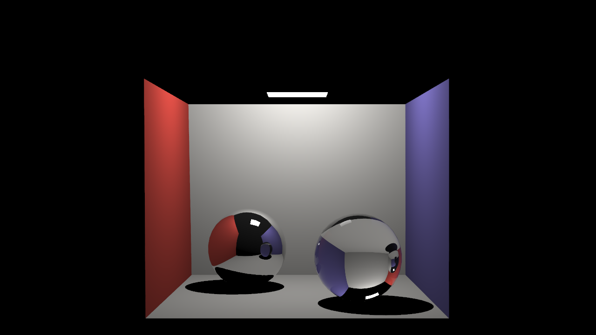
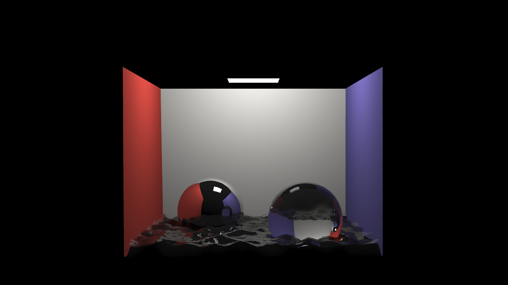

|
Recursive Rays: Mattisa
Kyle,Kelly,Diwas
|
|
Recursive Rays: Mattisa
Kyle,Kelly,Diwas
|
The class RayTracer provides an implementation to render an image given the G3D::Settings, an array of the scene's triangles Array<shared_ptr<Surface>>, a definition of the lights in the scene shared_ptr<LightingEnvironment>, a description of the camera shared_ptr<Camera>, and some stats. After making a RayTracer with create(), a user can ask it to render a scene as described by the given paramaters. The implementation races over each pixel (RayTracer::traceAllPixels), and then from one pixel traces the light received (RayTracer::traceOnePixel) by casting a light ray (RayTracer::castRay) to determine whether or not a ray casted out from that pixel actually hits a surface, calling RayTracer::L_scatteredDirect if the ray does hit a point on a surface to find the radiance emitted from that point. L_scatteredDirect computes the radiance by iterating over each light and determining whether or not it contributes to the radiance emitted from that surface. After setting the radiance for each pixel of an image, the render method can return an image to the user.
Our program has a GUI that allows the user to set the resolution, number of bounces allowed for each ray, and number of rays per pixel. It also allows the user to choose whether or not to cast shadows. After the image is rendered, the same gui pane reports the number of triangles, number of lights, Ray Trace time, ...time, and the number of primary, impulse, and shadow rays, and displays the rendered image in a separate window.
Our extension to the RayTracer class involved the addition of shadows, recursive backwards tracing, spot light illumination, multisampling, and emissive surfaces. When the number of rays per pixel is more than 1, then we randomly cast rays from [0,1] [0,1] relative pixel coordinate inside RayTracer::traceOnePixel() and at the end divide the total radiance by the number of rays per pixel. If the cast ray hits a surfel, then we compute the Whitted approximation at that surfel by using RayTracer::L_o. The Whitted approximation from a surfel is the sum of emitted radiance of the surfel, direct illumination at the surface (L_scatteredDirect), mirror and reflected light at the surface (L_scatteredSpecularIndirect), and an ambient term to estimate the missing illumination. Since the light that gets reflected and refracted from one surface could possibly hit other surfels, the user can input the number of bounces to be considered in RayTracer::m_settings.recursion while computing the total radiance of each pixel.
Further, if there are any spotlights, then only the primary rays from the surfels that are in the field of view of the spotlight are considered. If the user choses to show shadows, then for each light source, we bump the ray by a small value to approximate the line segment between the light source and the surfel that was hit, not including the surfel and the light source, and making sure to consider it from the reference point of the light source. We want to consider the light from the light source going towards the surface, rather than from the surface towards the light source because surfaces are one-directional(one-sided). From the point of view of the surfel, we would not be able to see the surfaces between it and the light source, so if we cast shadow rays from the light source to the surfels, we can find objects between light source and surfel that would shade the surfel.
Most of our work involved extending the existing RayTracer class which was itself based on code given to us last week. For multisampling, we chose to add the code to traceOnePixel since multisampling affects number of light rays per each pixel. For shadows, we chose to add the code to L_scatteredDirect because we consider light to surfel paths in that code. We made minor changes to the GUI interface because there was too much information in one column. So we split it into three separate GUIPanes with parameters for the Renderer, stats for the Ray Tracer, and a Video recording pane.
Our shadow behavior led to grainy pictures at times. This was because we did not normalize the vectors we used when creating a G3D::Ray. In our implementation of recursive ray tracing, we were not checking if on the subsequent bounces after the primary ray hit the first surfel, it hit another surfel at all. So if the light ray did not hit any other surfel after the first, that surfel in the first recursive call to L_scatteredDirect would be null, which caused our program to crash. Instead, the first thing we needed to do was check if the surfel was null, and if it was, then we simply returned the radiance (L) of the direct illumination on the original surfel.
We used the art generator from last week to generate the water height field. The art generation process creates a random mathematical expression using Expr, which is then evaluated in Art, with the final result being written as a heightfield.png. See last week's description of the heightfield generator for team blue for more details. This png is used by a scene.any file to create a heightfield. We experimented with different time steps to get different "phases" of water. Some time steps created random art that corresponded to calm water while others created random art that seemed like water ripples.
We then further tweaked the lambertian to be 0, the reflectivity to be high, and the glossiness to be slightly blue and mirror like.
We then proceeded to create two different types of images. Reflection images and water droplet like images. For the reflection images we cast a light on a box with a cool texture and then ran our raytracer. The light would reflect the box's texture onto the "water". See reflections.Scene.Any.
For our last type of image we used specific time steps in the random art generator that looked like water ripples. We then added boxes and spheres with the same material properties of water to simulate droplets falling into the water. The light in this case was set to shine upwards at the cube box "skybox". See cubeRipple.Scene.Any.
Reflective Cornell Box Scene:
|  |
| Results with Reflective Boxes |
|  |
| Results with Reflective Boxes |
The Mirror Box:
Our result for the Mirror Box with 1, 2 and 7 backward bounces.
|  |
| 1 backwards bounce |
 |
| 2 backwards bounces |
|  |
| 7 backwards bounces |
Spot Light:
Our result for Spotlights. Only the objects inside the spotlight cone are visible. The mirror spheres are colorless because the walls of the Cornell Box are not in the spotlight and thus do not get reflected on the surface of the spheres.
|  |
| Results on Single Light Cornell Box |
|  |
| Results on Single Light Mirror Spheres |
Emissive:
We know our implementation for emissive objects is working because in a scene with no lights and no lighting environment, the emissive objects are still being rendered.
 |
| Scene in G3D renderer |
|  |
| RayTraced Emissive Spheres |
Shadow Rays: Our results for Shadow Rays. When Use Shadows is not selected, we get:
 |
| Results without Shadows |
When Use Shadows is selected, we get:
 |
| Results with Shadows |
Impulses:
|  |
| Results with Mirror Spheres |
|  |
| Results with Reflective Spheres and Water |
Using a generated heightfield that looks like water, we created these scenes that look almost photographic.
 |
| City Reflection |
 |
| City Reflection 2 |
 |
| Mountain Reflections |
 |
| Cave Reflections |
 |
| Droplet |
 |
| Cubes Falling in Water |
 |
| alternate angle |
Kyle
Required hours: 6 Optional: 7
I would rate this project moderate-easy. Most of the code was given to us from the graphics codex or covered in detail in class. I learned about shadows and how simple they are, was somewhat confused by the simplicty of creating shadows given how adding them in games tends to slow down performance by a lot (at least for me).
Diwas
Required hours: 7 Optional: 4
I would also rate this project moderate because most of the code for ray tracing was in the Graphics Codex. I learned to work better with my group and to divide up the work load evenly. I also feel I improved my c++ skills because I was using the debugger to examine the call stack whenever I found a bug.
Kelly
Required hours: 7 Optional: 5
I'd rate the project as moderate because the code was fairly straightforward after we read the Graphics Codex. Also we divided up the work based on the strengths of each of our members, which helped us be more productive. We were done with our minimum viable product by Saturday night and by Monday we only had some finishing touches and some additions to the reportto go. I learned how recursive ray tracing and shadow rays work both conceptually and in the implementation. I also learned another strategy for working as a team. Having each member become an expert on a particular portion of the code was very useful because that person would then explain the code to each of the other members and it was also very efficient because each of us would take the code as far as we could before getting stuck and asking for help and so different portions of the code progressed simultaneously and at pretty much the same rate.
 1.8.9.1
1.8.9.1


{kind=link}
{kind=link}
{kind=link}
{kind=link}
{kind=link}
{kind=link}
{kind=link}
{kind=link}
{kind=link}